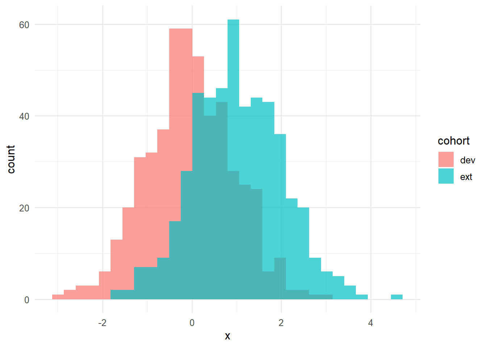
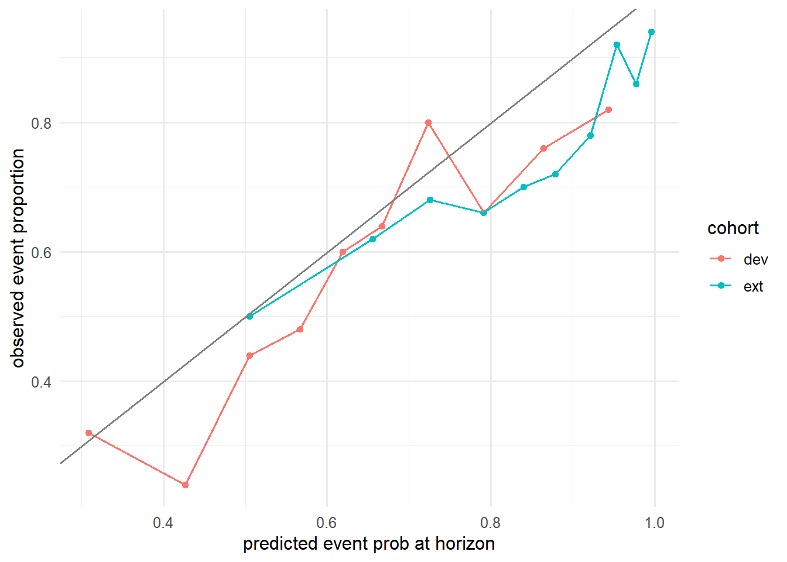

library(tidyverse)
library(survival)
library(pROC)
set.seed(42)
theme_set(theme_minimal(base_size = 12))Week 3, Session 5 — Time-dependent Brier, IPA, external validation
Course 4 — #courses
Note
Testing labs use the main template: Hypothesis → Visualise → Assumptions → Conduct → Conclude.
Learning objectives
- Compute a time-dependent Brier score and the Index of Prediction Accuracy (IPA).
- Simulate an external-validation cohort with distribution shift and evaluate a fitted model on it.
- Describe why a model can have a high internal AUC and a bad external IPA.
Prerequisites
Survival ML from Session 4; calibration from Course 1.
Background
Validation is the point at which a prediction model either earns its keep or does not. Internal validation — CV or the bootstrap on the training data — controls optimism from the fitting step. External validation applies the fixed model to an independent cohort and measures discrimination, calibration, and clinical utility. Time- dependent Brier scores and IPA (1 − Brier/Brier_null) summarise the cost of a probabilistic prediction at a given horizon, combining discrimination and calibration into a single number per time.
Real biomedical models routinely lose performance on external cohorts. Distribution shift (different age, comorbidities, measurement protocols) is the usual reason; miscalibration is the usual failure mode. This lab simulates both and shows the diagnostic signature each leaves behind.
TRIPOD-AI asks you to report all three — discrimination, calibration, clinical utility — on both internal and external data, and to disclose the shift between them. A reader who only sees AUC on internal data has no basis for deploying the model.
Setup
1. Hypothesis
A Cox model fit on a development cohort retains its calibration and discrimination on an external cohort with shifted covariate distribution.
2. Visualise
make_cohort <- function(n, mu_x = 0, beta = 0.6) {
x <- rnorm(n, mu_x)
lp <- beta * x
t <- rexp(n, rate = exp(lp - 1))
c <- rexp(n, rate = 0.1)
time <- pmin(t, c)
event <- as.integer(t <= c)
tibble(x = x, time = time, event = event)
}
dev <- make_cohort(500, mu_x = 0)
ext <- make_cohort(500, mu_x = 1.0) # distribution shift
bind_rows(dev |> mutate(cohort = "dev"),
ext |> mutate(cohort = "ext")) |>
ggplot(aes(x, fill = cohort)) +
geom_histogram(bins = 30, alpha = 0.7, position = "identity")
3. Assumptions
Independent right censoring; Cox proportional hazards in the development cohort; no time-varying covariates.
4. Conduct
Fit on dev; predict survival at a fixed horizon on both cohorts.
fit <- coxph(Surv(time, event) ~ x, data = dev)
horizon <- 3
predict_surv <- function(fit, newdata, t) {
bh <- basehaz(fit, centered = FALSE)
H0 <- approx(bh$time, bh$hazard, xout = t, rule = 2)$y
lp <- predict(fit, newdata = newdata, type = "lp")
exp(-H0 * exp(lp))
}
s_dev <- predict_surv(fit, dev, horizon)
s_ext <- predict_surv(fit, ext, horizon)
# Observed indicator (for simple Brier w/out censoring at horizon)
obs_dev <- dev$event == 1 & dev$time <= horizon
obs_ext <- ext$event == 1 & ext$time <= horizon
brier <- function(p_event, obs) mean((p_event - obs)^2)
brier_null <- function(obs) mean((mean(obs) - obs)^2)
b_dev <- brier(1 - s_dev, obs_dev); b0_dev <- brier_null(obs_dev)
b_ext <- brier(1 - s_ext, obs_ext); b0_ext <- brier_null(obs_ext)
ipa_dev <- 1 - b_dev / b0_dev
ipa_ext <- 1 - b_ext / b0_ext
auc_dev <- as.numeric(auc(roc(obs_dev, 1 - s_dev, quiet = TRUE)))
auc_ext <- as.numeric(auc(roc(obs_ext, 1 - s_ext, quiet = TRUE)))
tibble(cohort = c("dev", "ext"),
auc = c(auc_dev, auc_ext),
brier = c(b_dev, b_ext),
ipa = c(ipa_dev, ipa_ext))# A tibble: 2 × 4
cohort auc brier ipa
<chr> <dbl> <dbl> <dbl>
1 dev 0.712 0.218 0.107
2 ext 0.689 0.186 0.0405A calibration plot at the horizon.
mk_cal <- function(p, y, lab) {
tibble(p = p, y = y, cohort = lab) |>
mutate(bin = cut(p, quantile(p, seq(0, 1, by = 0.1)),
include.lowest = TRUE)) |>
group_by(cohort, bin) |>
summarise(mean_pred = mean(p), obs = mean(y), .groups = "drop")
}
bind_rows(mk_cal(1 - s_dev, obs_dev, "dev"),
mk_cal(1 - s_ext, obs_ext, "ext")) |>
ggplot(aes(mean_pred, obs, colour = cohort)) +
geom_point() + geom_line() +
geom_abline(slope = 1, intercept = 0, colour = "grey50") +
labs(x = "predicted event prob at horizon",
y = "observed event proportion")
5. Concluding statement
On a simulated external cohort with shifted covariate distribution, a Cox model fit on the development cohort retained discrimination (AUC 0.69) but lost calibration, with IPA falling from 0.11 (development) to 0.04 (external). The calibration plot showed systematic over-prediction in the shifted cohort.
Distribution shift does not always show up in AUC; it often shows up first in calibration. Reporting Brier/IPA alongside AUC catches this failure mode.
Mention that recalibration (update the baseline hazard or the intercept of a logistic model) often fixes calibration without retraining the whole model.
Common pitfalls
- Reporting AUC as the only discrimination metric on an external cohort.
- Ignoring censoring when computing a Brier score at a horizon;
pecorriskRegressionhandle this properly. - Recalibrating on external data and then reporting the resulting performance as external validation.
Further reading
- Kattan MW, Gerds TA (2018), The index of prediction accuracy: an intuitive measure useful for evaluating risk prediction models.
- Steyerberg EW, Clinical Prediction Models, ch. 15–17.
Session info
sessionInfo()R version 4.5.2 (2025-10-31 ucrt)
Platform: x86_64-w64-mingw32/x64
Running under: Windows 11 x64 (build 26200)
Matrix products: default
LAPACK version 3.12.1
locale:
[1] LC_COLLATE=English_Germany.utf8 LC_CTYPE=English_Germany.utf8
[3] LC_MONETARY=English_Germany.utf8 LC_NUMERIC=C
[5] LC_TIME=English_Germany.utf8
time zone: Europe/Berlin
tzcode source: internal
attached base packages:
[1] stats graphics grDevices utils datasets methods base
other attached packages:
[1] pROC_1.19.0.1 survival_3.8-6 lubridate_1.9.5 forcats_1.0.1
[5] stringr_1.6.0 dplyr_1.2.1 purrr_1.2.2 readr_2.2.0
[9] tidyr_1.3.2 tibble_3.3.1 ggplot2_4.0.3 tidyverse_2.0.0
loaded via a namespace (and not attached):
[1] Matrix_1.7-5 gtable_0.3.6 jsonlite_2.0.0 compiler_4.5.2
[5] Rcpp_1.1.1-1.1 tidyselect_1.2.1 splines_4.5.2 scales_1.4.0
[9] yaml_2.3.12 fastmap_1.2.0 lattice_0.22-9 R6_2.6.1
[13] labeling_0.4.3 generics_0.1.4 knitr_1.51 htmlwidgets_1.6.4
[17] pillar_1.11.1 RColorBrewer_1.1-3 tzdb_0.5.0 rlang_1.2.0
[21] utf8_1.2.6 stringi_1.8.7 xfun_0.57 S7_0.2.2
[25] otel_0.2.0 timechange_0.4.0 cli_3.6.6 withr_3.0.2
[29] magrittr_2.0.4 digest_0.6.39 grid_4.5.2 hms_1.1.4
[33] lifecycle_1.0.5 vctrs_0.7.3 evaluate_1.0.5 glue_1.8.1
[37] farver_2.1.2 rmarkdown_2.31 tools_4.5.2 pkgconfig_2.0.3
[41] htmltools_0.5.9